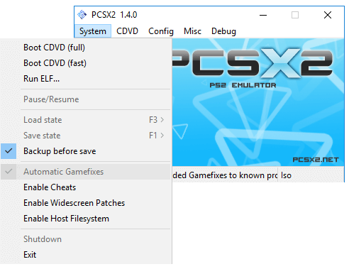
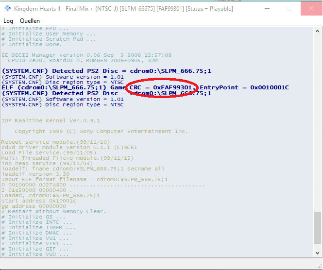

This page will guide you through the whole process of creating cheats.
First, enable them by clicking on System->Enable Cheats
Cheats are stored in a .pnach file. These cheat files are stored in "Documents/PCSX2/Cheats/cheat.pnach".
The Name of the .pnach file is the "CRC" of your game. To find your games CRC you just have to enable the console (Misc->Open Console) and start a game.
You will see the ID after starting the game in the console.:
Now you can rename your .pnach file to your CRC, in my case my file would be called "FAF99301.pnach".
The first 2 lines of your cheat file should contain the name of your game and a comment for it, mine is for example "Kingdom Hearts 2 Final Mix" and the comment is "Cheats for KH2FM". After these 2 lines you can add all your cheats.
Cheats are in the format of patch=1,EE,Code#1, extended,Code#2 and comments can be made with //.